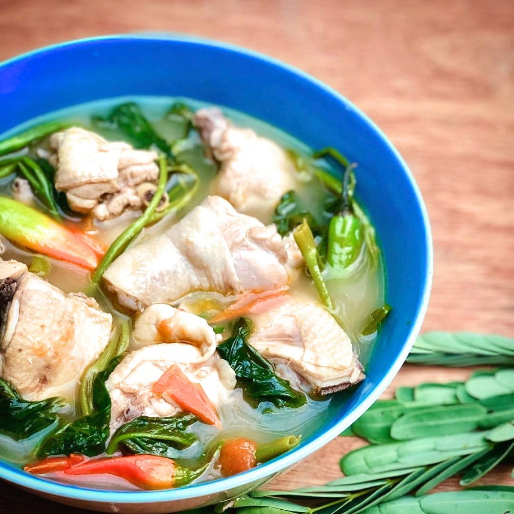
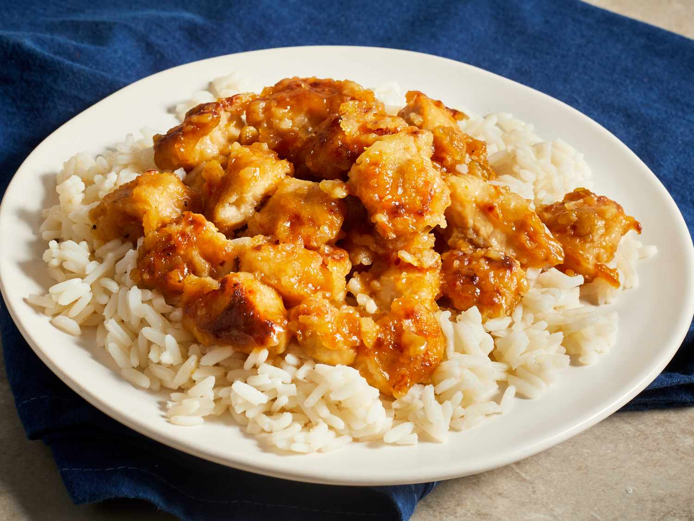

Puto Bumbong A seasonal dessert with a savorous and delicate taste filled with the mixture of sugar, butter, and condensed milk creating a fine, sticky texture. |
A TABLE
4 Food That Are Of Savory If you ever wish to treat me by cuisine, here are my favorite filipino culinary dishes. They are simple but the savor brings back the childhood souvenirs. |

Sinigang Na Munok A classic Filipino dish consisting of sliced chicken with leaves such as kangkong, sitaw, green chili mixed with tomato slices slices creating a acidic spicy taste. |

Beef Pares An occassional Filipino dish that has a sweet taste containing star anise mixed with sliced cube beef creating a broth that should be drank hot. |

Orange Chicken A Chinese adapted Filipino cuisine that has a acidic, sweet, and little spicy taste coming from the chicken and spices added offering a delicious easy-to-eat meal. |